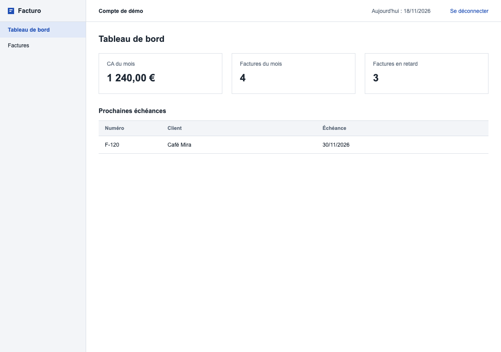
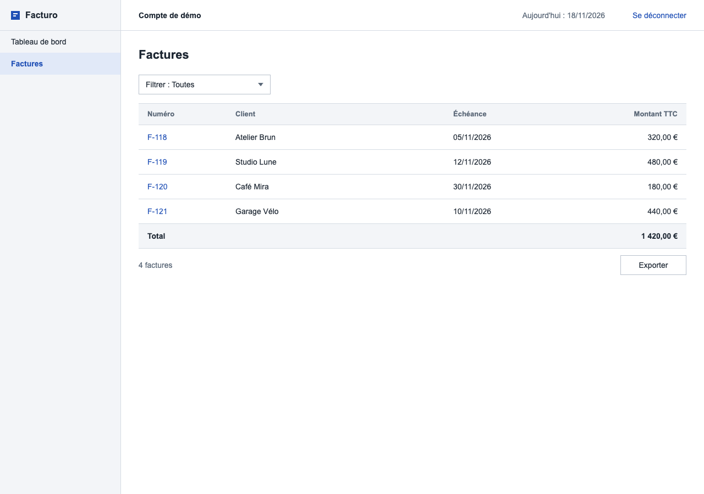
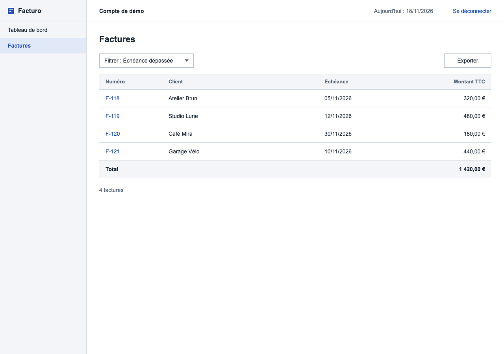

vue defaut


vue defaut


vue defaut


vue filtre-echeance

Fenêtre de 1280 × 900, changements par défaut de chaque version, détail de la facture F-119.
| Écran | Version 12 | Version 13 |
|---|---|---|
| tableau-de-bord vue defaut | |  |
| liste-des-factures vue defaut |  | |
| detail-facture vue defaut | | |
| liste-des-factures vue filtre-echeance | Pas de capture : ce filtre n'existe pas en version 12. |  |